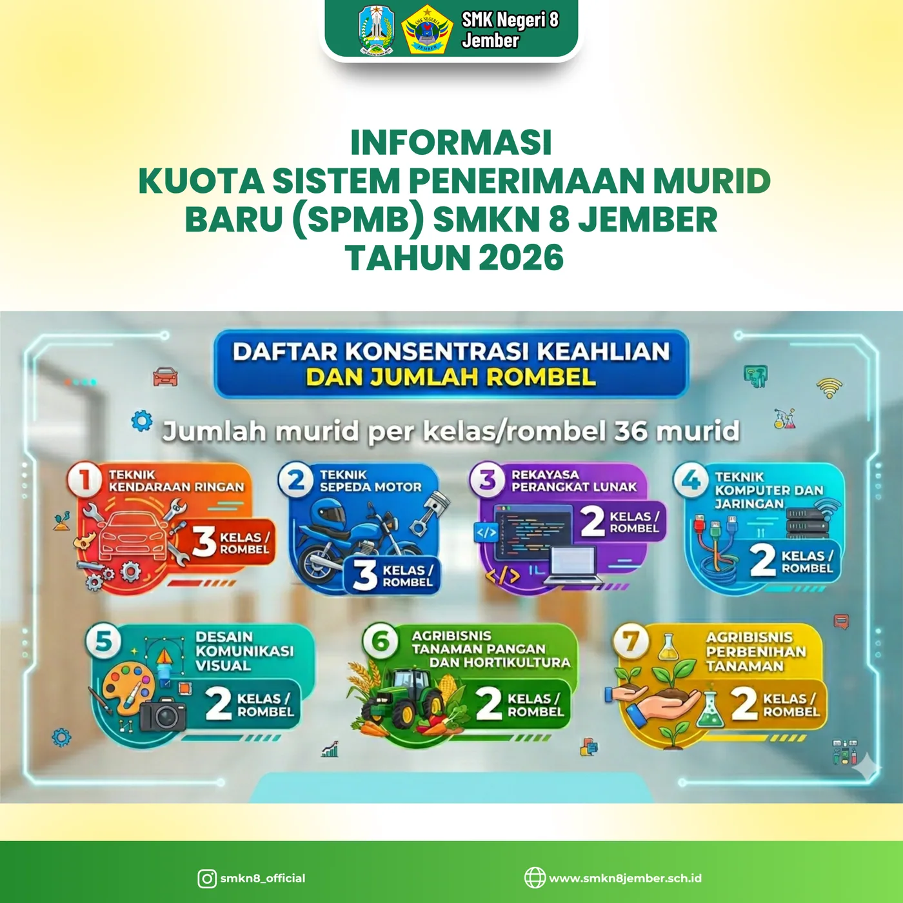

Kuota 16 rombel × 36 murid pada 7 konsentrasi keahlian. Simak jalur, tahapan, dan pengumuman hasilnya — semua tersimpan di situs ini.
Jumlah murid per kelas/rombel adalah 36 murid, tersebar pada tujuh konsentrasi keahlian berikut.
| Konsentrasi Keahlian | Rombel | Kuota |
|---|---|---|
| Teknik Kendaraan Ringan | 3 | 108 |
| Teknik Sepeda Motor | 3 | 108 |
| Rekayasa Perangkat Lunak | 2 | 72 |
| Teknik Komputer dan Jaringan | 2 | 72 |
| Desain Komunikasi Visual | 2 | 72 |
| Agribisnis Tanaman Pangan & Hortikultura | 2 | 72 |
| Agribisnis Perbenihan Tanaman | 2 | 72 |
| Total | 16 | 576 |

Melalui portal SPMB Jawa Timur / panitia sekolah dengan melengkapi berkas rapor, kartu keluarga, dan dokumen pendukung.
Jalur afirmasi (termasuk prioritas terdekat), jalur nilai rapor + TKA, serta jalur prestasi akademik & non-akademik.
Hasil tiap jalur dipublikasikan resmi — dokumen pengumuman tersimpan di halaman Pengumuman.
Calon murid yang diterima melakukan daftar ulang lalu mengikuti Masa Pengenalan Lingkungan Sekolah.
Dokumen 7 halaman tersimpan lokal
Dokumen 13 halaman tersimpan lokal
Form siswa, orang tua, DuDi, dan internal GTK
smknegeri08jember@gmail.com · 0336-444112